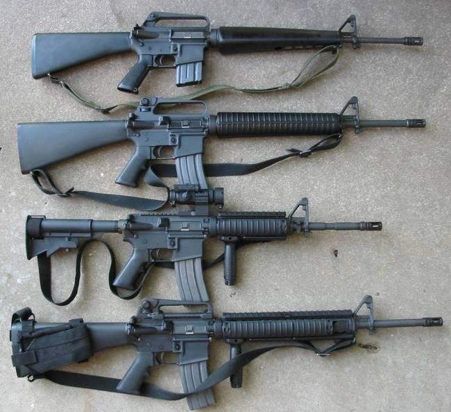

M16突擊步槍

M16槍系是一系列突擊步槍（英語：Assault Rifle，德語：Sturmgewehr），發射北約標準的5.56公釐口徑彈藥。M16是1967年以來美國陸軍使用的步兵輕武器主力，亦被至少15個北約國家所採用，更是同口徑槍械中產量最多的一個型號。美國軍方給由阿瑪萊特AR-15發展而來的軍械編號。
- M16的上下機匣都是由鋁合金製成，槍管、「槍機總成」（bolt assembly）是鋼製，護木、手槍式握把以及槍托則為塑膠製品。早期的型號特別輕巧，只有2.9公斤（6.4磅）。由此可見，它比起1950~60年代的7.62公釐戰鬥步槍都要輕。即使與裝滿彈藥後重約5公斤的AK相比之下也還是很占優勢。M16A2和之後的改良型重量有所增加（裝滿彈藥時重8.5磅或3.9公斤），因為它們採用加厚的槍管。對於因操作不當引起的損害，厚槍管更加耐用，而且它也減緩連續射擊時的過熱，適合持續射擊。有別於從頭到尾都很厚的傳統精確射擊用槍管，M16A2的槍管只有護木之前的部分比較厚。護木下的槍管部分和M16A1相同，以兼容M203榴彈發射器。M16全槍長40英吋（1.02公尺），當中其標準槍管長20英吋（508公釐）。彈匣卡榫在步槍的右側，位於扳機護弓的前方。
M16是一款輕巧的5.56公釐口徑突擊步槍，它採用直接導氣式原理，由高壓氣體通過導氣管（Gas tube）直接推動槍機上膛，以彈匣供彈，全槍由槍管用鋼材，鋁合金以及複合塑膠製成。M16是可切換射擊模式擊模式槍械 ，射擊模式可透過位於下機匣左側的射擊選擇桿（Selector，俗稱「快慢機」）切換。